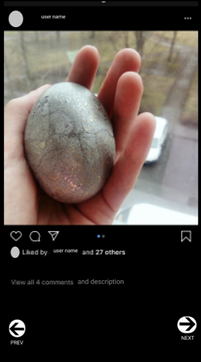
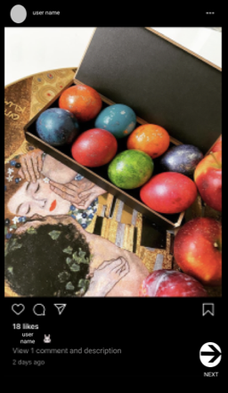
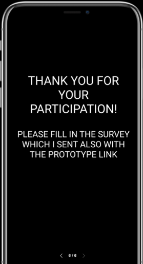
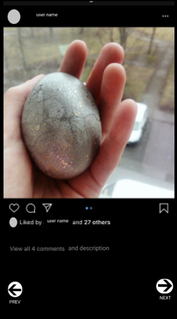
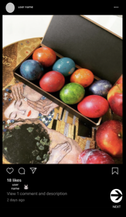
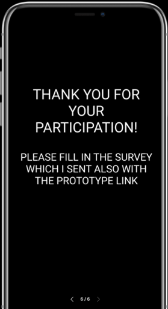

A/B testing
What is A/B testing?
A/B testing is a way to test two different designs. The main purpose of it is that if you change for example one aspect of the functionality design you have two different versions to test on a user/user group.
What I have done with A/B testing?
For practising A/B testing I created two different versions of an Instagram main page. in A version, the main page remained in its original version. In the B version, I created two buttons - the user can choose "description "or "comments" buttons or both. When the user clicked on the description button the description about the image popes up, when the comments button is clicked the user can see the comments about that images.
Testing procedures
Due to the Corona virus circumnutates I had limitations that I am not allowed to meet with other people outside my family. So, I only had two participants and they were my family members.
What was the result?
According to the feedback I received from the users the result was that the B version was better. The main reason the users pointed out was that by giving them freedom to decide whether they want to see the "description "or "comments" they liked it more. Even though for that the user has to take more steps for getting all the information about the image(post).
A version


 B version



The first research and design project
B version



The first research and design project
In research for design I made a research of a subculture. I chose photography as my research field. First of all, I did desk researching about photography. I found out that making living as a photographer is pretty hard nowadays due to the fact that today’s world everybody has a camera in their pocket.
After the desk research, I prepared questions for an interview that I made with one of the photography students from The Royal Academy of Arts in The Hague. Mostly I concentrated on finding out the motives why somebody studies photography in an art university.
As I understood from the interviews that you have to work hard to be noticed as an art photogrpaher. The main motive for students to study in an art school is to learn to express themselves through photography.
An example from my research
Theme 3:
studying photography
Description
By studying photography, I mean how does someone see studying photography in school.
Data
Her: In the Art School, we have a lot of studios and I haven’t been shooting in the studio before. (So, it gives her more experimenting opportunities).
Data from desk research.
From an article called “Why study photography?”. Nowadays as we all know photography has become to a point that to live off purely from photography is really hard and the change to succeed is low. The reason why people study photography is to have a way to express their feelings and emotions and thoughts. And one interesting quote from the article “When you enter the world of professional photography as a photographer, it is your work and how you present that work — not a certificate or grade — that speaks for you”.

Nowadays it’s not that much about the photography as an job but more as an way to communicate with other people. The photography language so do say is the universal language.
Also from the interview I found out how people are expressing their emotions trough photography.
Theme 1:
Expressing your emotions via photography.
Description
As an art form, some people like to express themselves via art like for example photography
Data
Her: I had a dramatizing experience in my childhood It was a dramatizing experience. And Photography was a way to express my emotions and to show how I was feeling. I am not good with words so it was a good way to tell my parents how ages I was about it and how depressed I was. Then eventually it transformed into more like photography.
I also observed photographers in the process of studying. It was a great experience to see how dedicated they were!